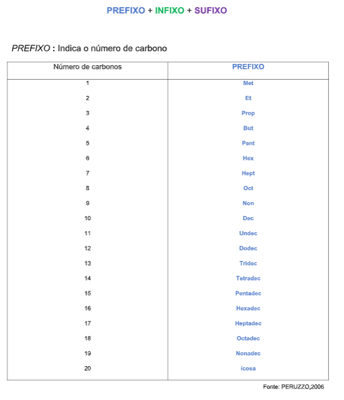
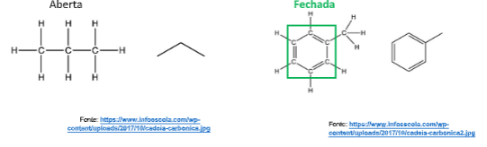
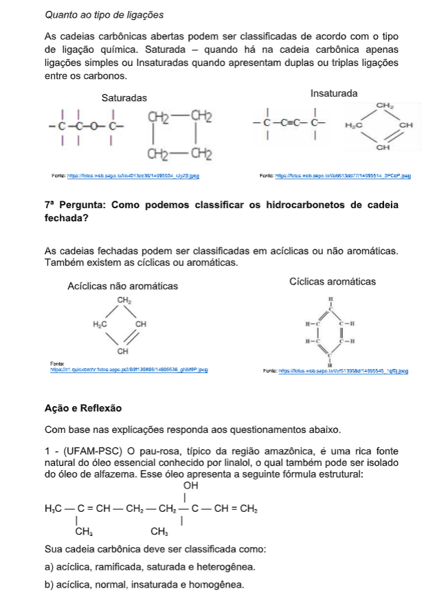

Capítulo 4
A indústria do petróleo e a relação com os demais setores
Que relações com a Química a indústria petrolífera tem? Como perceber os impactos da atividade petrolífera no cotidiano?
CONTEXTUALIZANDOA indústria do petróleo e gás natural possui uma grande importância no cenário econômico mundial, sendo essencial para o desenvolvimento socioeconômico do nosso país. O petróleo é considerado o principal combustível e é insumo para a produção de diversos produtos industriais, tais como borracha, solventes, fertilizantes etc. O gás natural, por sua vez, é uma fonte de energia limpa que está ganhando cada vez mais espaço como combustível, principalmente industrial. Assim o petróleo influencia na atividade de produção de outros setores da indústria. Segundo o Balanço Energético Nacional de 2007 realizado pelo Ministério de Minas e Energia, com base nos dados do ano de 2006, o petróleo e o gás natural representam juntos 47,3 % da matriz energética brasileira. Na história de sua existência no Brasil, a atividade petrolífera já deixou marcas irreversíveis na paisagem econômica, social e ambiental dos territórios onde se implantou. Além de predominante no setor de transportes, o petróleo ainda é o principal responsável pela geração de energia elétrica em diversos países do mundo. Apesar da expansão recente da hidroeletricidade e da diversificação das fontes de geração de energia elétrica verificadas nas últimas décadas, o petróleo ainda é responsável por aproximadamente 7,9% de toda a eletricidade gerada no mundo.
(Re)construindo conceitosO petróleo é uma mistura de hidrocarbonetos (moléculas de carbono e hidrogênio) que tem origem na decomposição de matéria orgânica, principalmente o plâncton (plantas e animais microscópicos em suspensão nas águas), causada pela ação de bactérias em meios com baixo teor de oxigênio. Ao longo de milhões de anos, essa decomposição foi-se acumulando no fundo dos oceanos, mares e lagos e, pressionada pelos movimentos da crosta terrestre, transformou-se na substância oleosa denominada petróleo. Neste capítulo estudaremos a respeito do Petróleo e basearemos nossos estudos em questionamentos.
1ªPergunta: Qual a origem do petróleo?Essa substância é encontrada em
bacias sedimentares específicas,
formadas por camadas ou lençóis
porosos de areia, arenitos ou calcários.
A figura ao lado, apresenta uma
configuração típica de uma jazida de
petróleo.
Embora conhecido desde os primórdios
da civilização humana, somente em
meados do século XIX tiveram início a  exploração de campos e a perfuração de
poços de petróleo. A partir de então, a
exploração de campos e a perfuração de
poços de petróleo. A partir de então, a indústria petrolífera teve grande expansão,
principalmente nos Estados
Unidos e na Europa. Apesar da
forte concorrência do carvão e
de outros combustíveis
considerados nobres naquela
época, o petróleo passou a ser
utilizado em larga escala,
especialmente após a invenção
dos motores a gasolina e a óleo
diesel.
A ilustração ao lado apresenta o
esquema de um poço de
extração.
indústria petrolífera teve grande expansão,
principalmente nos Estados
Unidos e na Europa. Apesar da
forte concorrência do carvão e
de outros combustíveis
considerados nobres naquela
época, o petróleo passou a ser
utilizado em larga escala,
especialmente após a invenção
dos motores a gasolina e a óleo
diesel.
A ilustração ao lado apresenta o
esquema de um poço de
extração.
Como o petróleo é composto por uma mistura complexa de hidrocarbonetos, precisa ser refinado para a separação dos componentes e aproveitamento. No entanto, não se conhece até o momento nenhum método que capaz de separar cada dos hidrocarbonetos que compõem o petróleo. Por isso, essa separação ocorre em frações de substâncias, ou seja, separa-se a mistura complexa do petróleo em misturas bem mais simples.

O primeiro método utilizado para isso é a destilação fracionada, que se baseia na diferença das faixas das temperaturas de ebulição das frações do petróleo. Para tal, utiliza-se uma torre de destilação com uma fornalha na parte inferior, onde o combustível é aquecido. A torre possui até 50 pratos ou bandejas, sendo que cada uma apresenta uma temperatura diferente que vai diminuindo à medida que a altura aumenta. O próximo processo de refino do petróleo é a destilação a vácuo. A diferença que ocorre dessa destilação para a anterior é somente que as frações obtidas são submetidas a uma pressão inferior à da atmosfera em uma torre de fracionamento. Isso faz com que frações mais pesadas entrem em ebulição em temperaturas mais baixas que o seu ponto de ebulição e, desse modo, evita-se que suas moléculas de cadeias mais longas se quebrem. A terceira etapa é o craqueamento térmico ou craqueamento catalítico do petróleo. Os processos anteriores foram físicos, mas agora se usa um processo químico. Esse termo “craqueamento” vem do inglês “to crack”, que significa quebra, assim, quebram-se moléculas mais longas em moléculas menores. Desse modo, transformando determinadas frações de menor interesse comercial em frações de maior interesse. Na sequência apresentamos um quadro onde é possível ver o tipo de produto obtido, a temperatura, a composição aproximada e alguns dos usos principais.
3ª Pergunta: Quais as características da composição do Petróleo?Os hidrocarbonetos são compostos formados
apenas por átomos de hidrogênio e carbono.
São substâncias apolares e
consequentemente não conduzem corrente
elétrica, além de serem os compostos mais
simples da Química Orgânica. Os
hidrocarbonetos são os principais
constituintes do petróleo que é formado a  partir da deposição de matéria orgânica no
fundo de mares e lagos e da sedimentação
desse material sob alta pressão e
temperaturas.
partir da deposição de matéria orgânica no
fundo de mares e lagos e da sedimentação
desse material sob alta pressão e
temperaturas.
Outro fato importante e que envolve estes compostos é a octanagem da gasolina que quanto maior for maior será a resistência a detonação. O que significa que a gasolina com maior octanagem tende a proporcionar um melhor aproveitamento pelo motor da energia proveniente deste combustível. Quimicamente falando, a cadeia carbônica será maior e consequentemente gerará mais energia ao entrar em combustão.
 4ª Pergunta: Como pensar na nomenclatura que devemos dar aos
hidrocarbonetos?
4ª Pergunta: Como pensar na nomenclatura que devemos dar aos
hidrocarbonetos?
A resposta para este questionamento está na IUPAC (International Union of Pure and Applied Chemistry), traduzindo para a Língua Portuguesa é "União Internacional da Química Pura e Aplicada", esta união determinou o seguinte raciocínio: Para qualquer elaboração de nomenclatura devemos pensar da seguinte maneiras

5ª Pergunta: Como podemos classificar os hidrocarbonetos quanto à sua cadeia carbônica?
O átomo de carbono tem a propriedade de formar cadeias carbônicas. Elas são classificadas em aberta, fechada ou mista. As cadeias abertas são chamadas também de cadeias acíclicas ou alifáticas e apresentam duas extremidades ou pontas de cadeia.

6ª Pergunta: Como podemos classificar os hidrocarbonetos?
Quanto a presença de átomos diferentes do carbono na cadeia principal Também são classificadas de acordo com a presença de um heteroátomo ou não entre carbonos. Homogênea – não possui heteroátomos entre carbonos enquanto a Heterogênea possui.

